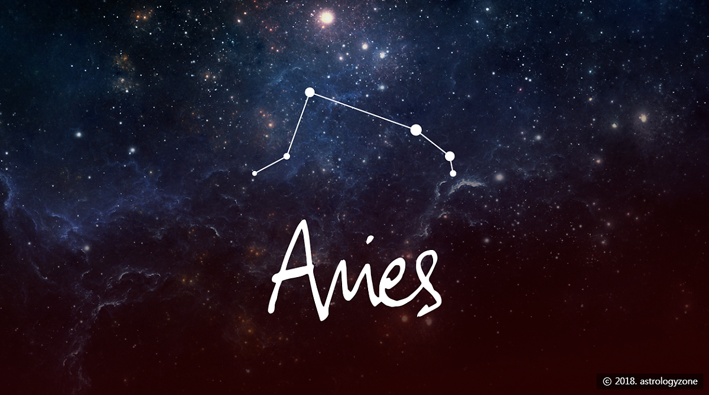

Aries (양자리)
황도 12궁의 제 1궁
3월 21일 ~ 4월 19일
황도 12궁의 첫 번째 별자리라는 상징성 때문에 매우 유명하지만, 실제로는 별 3개가 삼각형으로 모여있는게 전부인 작은 별자리다. 수호성은 화성으로 전갈자리와 같은 수호성을 갖는다.
그나마 주변에 눈에 띄는 별이 없고 비교적 밝은 별들이 모여 있어서, 위치만 정확히 알고 있다면 찾기 어려운 별자리는 아니다. 하지만 이 별자리에 왜 양자리라는 이름이 붙었는지는 미스테리. 알파벳 L자를 옆으로 뉘어놓은 듯 별들이 배열된 형태인데 아마도 양뿔을 형상화 한 것이라고 추정된다.
양자리에 얽힌 신화 중 가장 대표적인 이야기는 역시 보이오티아 왕 아타마스의 두 아이 프릭소스와 헬레 남매의 이야기이다. 남매의 친어머니인 구름의 요정 네펠레는 계모의 속임수로 인해 닥친 기근으로 제물로 바쳐져 죽을 위기에 처한 자기 자식들의 모습을 보고 제우스에게 도움을 청했고, 제우스는 헤르메스를 통해 하늘을 달리는 황금양을 보내 아이들을 돕게 했다. 이 황금양이 후에 하늘에 올라가 양자리가 되었다고 한다.
이때 두 아이 중 여동생 헬레는 유럽과 아시아를 가로지르는 해협을 지나다 그만 바다로 떨어져 죽고 만다.
이후 이 해협은 '헬레스폰토스(헬레의 바다)'라는 이름으로 불리게 된다.